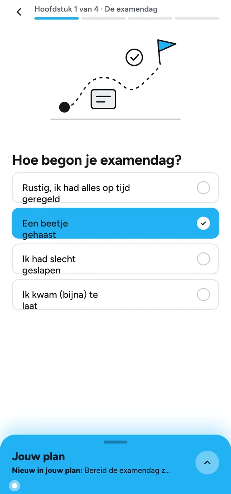
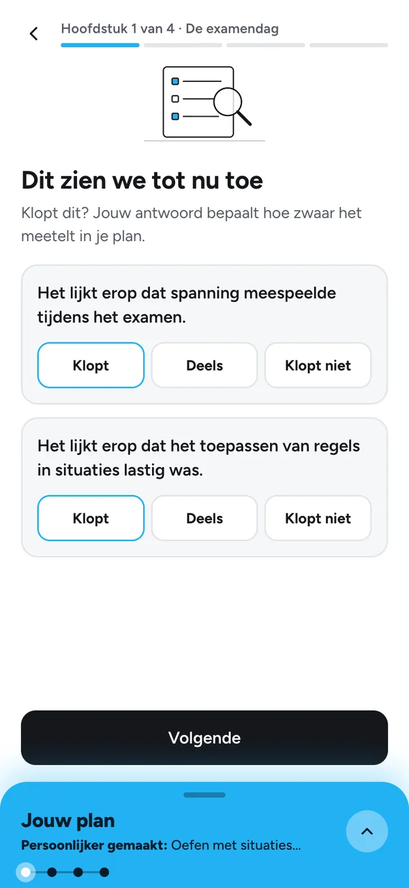

CBR
From reflection to a better preparation plan
A failed theory exam tells candidates what went wrong, not what to change. A guided reflection turns their answers into a personal plan for the next attempt.
Read the CBR case
